O processo de filtração glomerular (FG) ocorre nos corpúsculos renais.
Esse processo consiste na saída de fluído do sangue que está nos capilares glomerulares para dentro da cápsula de Bowman (néfron).
Perceba que a taxa de filtração glomerular depende diretamente da taxa de fluxo sanguíneo renal: se chega mais sangue, a pressão hidrostática do capilar é maior, e o fluído será movido para dentro da cápsula.
Na figura abaixo, relembre como o sangue chega até o glomérulo.
Note que ele chega ao rim pela artéria renal.
Que essa artéria ramifica-se em artérias segmentares, e então artérias interlobares (passam entre as pirâmides renais).
Quando as artérias interlobares chegam na base das pirâmides renais, elas recebem o nome de artérias arqueadas.
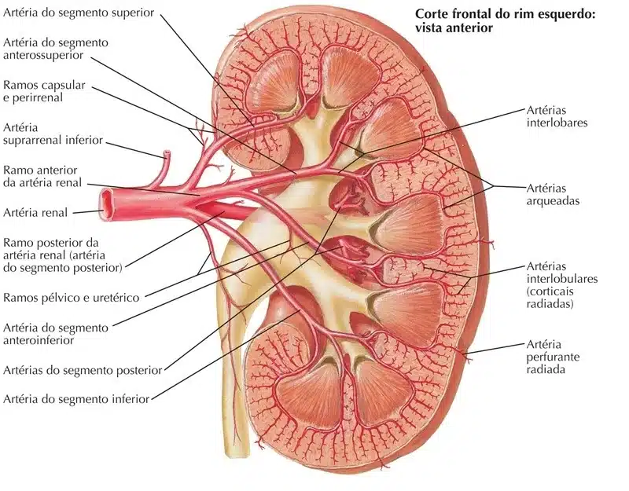
NETTER: Frank H. Netter Atlas De Anatomia Humana. 7 ed. Rio de Janeiro, Elsevier, 2018.
Observe com maior detalhe as artérias citadas na figura anterior.
Perceba que novas artérias partem das artérias arqueadas, são as artérias interlobulares.
São dessas artérias interlobulares que as arteríolas aferentes surgem, para então chegarmos na primeira rede de capilar do sistema porta renal: o glomérulo.
Na figura abaixo, os glomérulos são esses “saquinhos vermelhos”.
Os néfrons foram removidos, para facilitar a visualização.
Mas as setas amarelas indicam lugares onde a figura adicionou o néfron.
Imagine um néfron “abraçando” cada um desses saquinhos vermelhos.
A cápsula de Bowman + o glomérulo associado a ela é o corpúsculo renal.
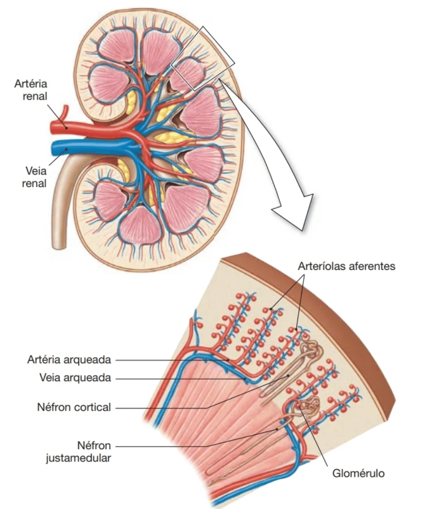
SILVERTHORN: Fisiologia humana, uma abordagem integrada. 7. ed. – Porto Alegre : Artmed, 2017.
Na próxima imagem, os corpúsculos renais estão circundados de amarelo.
Serão nesses corpúsculos que o processo de FILTRAÇÃO GLOMERULAR ocorrerá.
Cada rim possui uma média de 1 milhão de corpúsculos renais.
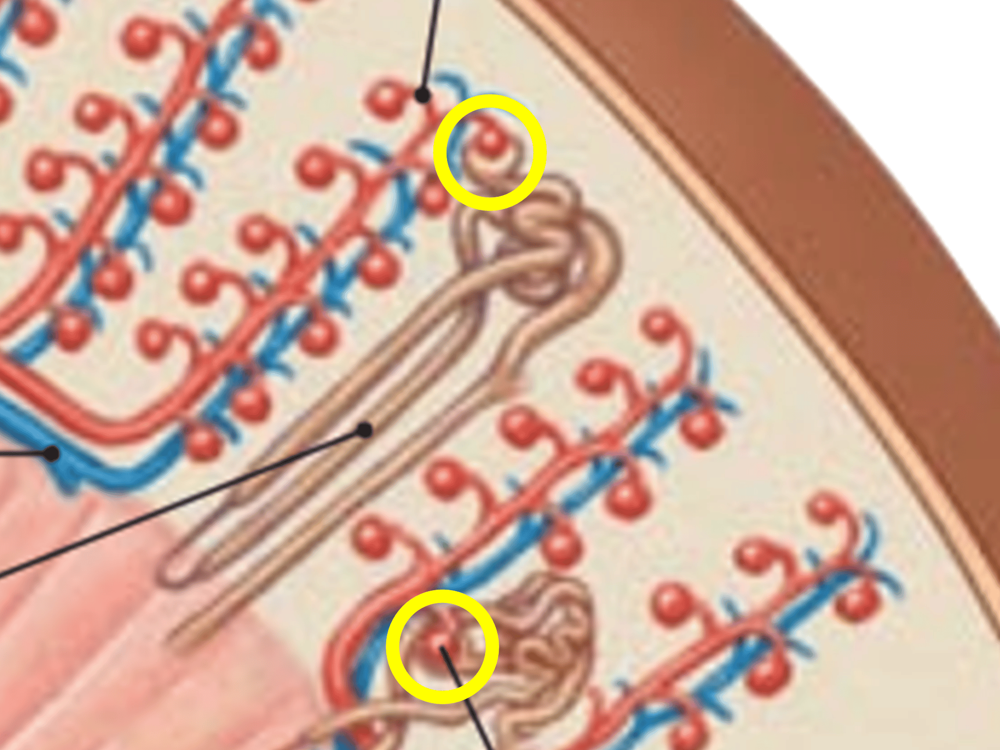
SILVERTHORN: Fisiologia humana, uma abordagem integrada. 7. ed. – Porto Alegre : Artmed, 2017.
Barreiras da filtração glomerular
Para que ocorra a filtração, o fluído no sangue deve atravessar 3 barreiras:
Endotélio do capilar
Lâmina basal
Podócitos (células do folheto visceral da cápsula de Bowman).
A figura abaixo ilustra essas barreiras:
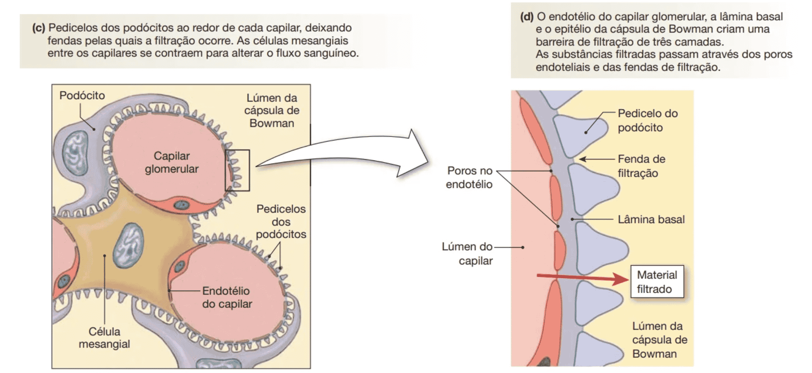
SILVERTHORN: Fisiologia humana, uma abordagem integrada. 7. ed. – Porto Alegre : Artmed, 2017.
Seletividade no provesso de filtração
A seleção do que será filtrado ocorre pelo tamanho da molécula, e também pela carga.
A tabela 1 abaixo, mostra essa seleção de acordo com o tamanho (peso molecular) da substância.
A água é filtrada livremente, e a ela foi dada o valor de 1.
Assim, podemos concluir que o sódio e glicose são filtrados tão livremente quanto a água, uma vez que também possuem filtrabilidade de 1.
Note que a filtrabilidade da albumina é extremamente baixa, e é por isso que normalmente não eliminamos albumina pela urina.
Tabela 1: Filtrabilidade de Substâncias pelos Capilares Glomerulares Baseada no Peso Molecular
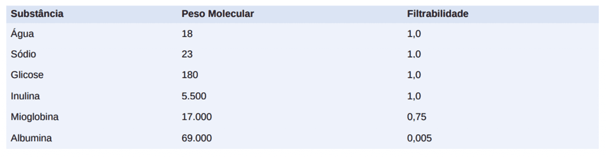
A figura abaixo mostra a importância da carga na seleção de filtração.
O estudo utilizou o polissacarídeo dextrana.
Ele foi artificialmente sintetizado em diferentes tamanhos e cargas, e sua filtrabilidade foi medida.
Note que, num mesmo tamanho de molécula, as dextranas POSITIVAS apresentaram maior filtrabilidade relativa.
Já as dextranas NEGATIVAS foram menos filtradas mesmo no menor tamanho estudado (raio de 18 Å).
Esse experimento mostra que a seleção de filtração ocorre tanto pelo tamanho, mas também pela carga da substância: moléculas grandes filtram menos.
Moléculas de carga negativa filtram menos.
A albumina, por exemplo, une ambos os fatores.
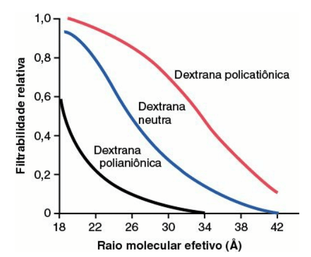
Determinantes da filtração glomerular
A FG é determinada pela pressão efetiva de filtração, e também pelo coeficiente de filtração.
Observe a equação abaixo, que traz isso matematicamente.
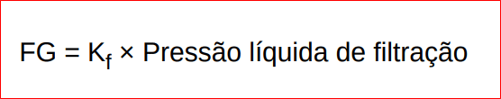
Mas o que isso quer dizer?
A pressão efetiva de filtração é a resultante das forças que atuam nos compartimentos que formam a interface capilar glomerular + cápsula de Bowman.
Veja que as forças de Starling atuam nessa região, sendo algumas dessas forças num sentido a favor da filtração, e outras contra a filtração.
Observe na figura abaixo como as 3 principais forças atuam no ambiente onde ocorre a FG.
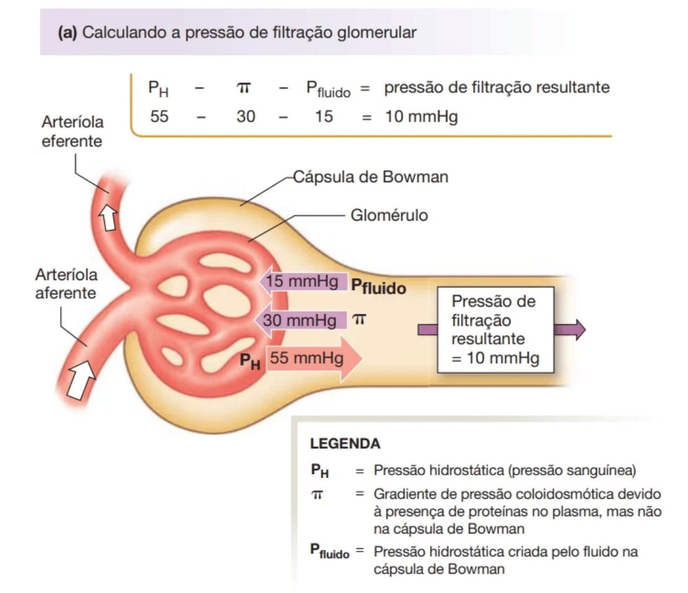
SILVERTHORN: Fisiologia humana, uma abordagem integrada. 7. ed. – Porto Alegre : Artmed, 2017.
Perceba que as forças de Starling são forças, que “empurram” o fluído para um lado ou para o outro.
A filtração ocorre porque a pressão hidrostática glomerular é maior do que as forças que se opõem à ela.
Mas veja que a alteração nessas forças, pode alterar a FG.
Já o coeficiente de filtração (Kf) é o resultado da condutividade hidráulica e da área de superfície dos capilares glomerulares.
Uma maneira de alterar esse Kf seria por exemplo diminuir o número de capilares funcionantes (reduzindo a área de superfície para a filtração).
Ou aumentando a espessura da membrana capilar glomerular (reduzindo a condutividade hidráulica).
Algumas doenças crônicas como hipertensão e diabetes reduzem Kf por esses mecanismos, mas fisiologicamente a alteração de Kf não é um alvo dos mecanismos homeostáticos que visam regular a FG.
Por essa razão, o presente texto foca nas maneiras que o corpo desenvolveu para alterar as forças de Starling, e assim controlar a FG.
Pressão hidrostática glomerular
Basicamente, a pressão hidrostática glomerular é determinada por três variáveis, cada uma das quais sob controle fisiológico:
Pressão arterial;
Resistência arteriolar aferente;
Resistência arteriolar eferente.
Analise na figura abaixo como modificações nas arteríolas aferente e eferente podem influenciar a FG:
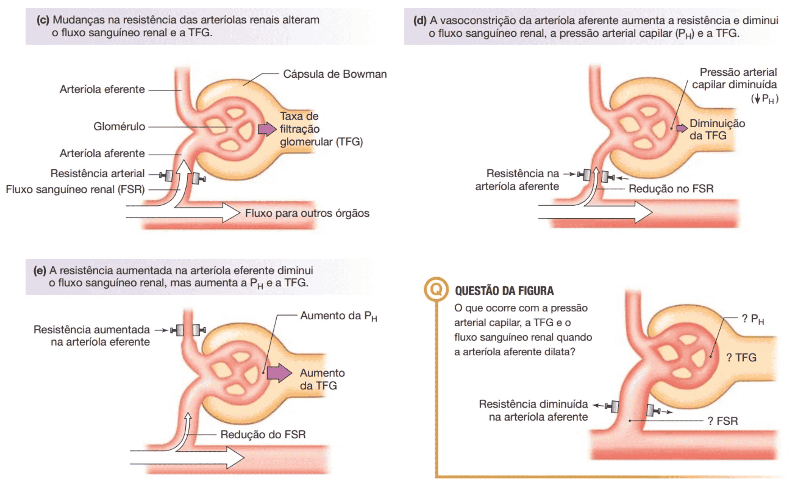
SILVERTHORN: Fisiologia humana, uma abordagem integrada. 7. ed. – Porto Alegre : Artmed, 2017.
Pressão coloidosmótica glomerular
Uma vez que essa força se opõe à FG, um aumento dela vai diminuir esse processo.
Esse aumento pode ocorrer quando a concentração de albumina plasmática estiver mais elevada.
O contrário também é verdade: caso haja uma queda na albuminemia, essa pressão que age contra a FG diminui, e a FG aumenta.
Observe a imagem abaixo, que mostra uma situação fisiológica de variação dessa força:
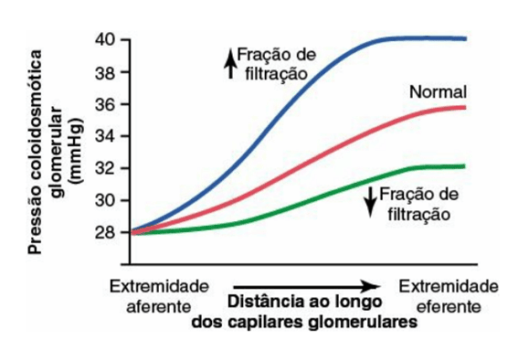
A imagem mostra que, conforme vai ocorrendo a passagem do sangue ao longo dos capilares glomerulares, sentido arteríola eferente, a pressão coloidosmótica no plasma vai aumentando.
Isso porque a filtração vai ocorrendo, e o plasma vai ficando mais concentrado de proteínas (uma vez que está perdendo líquido).
Nesse raciocínio, em qual porção do capilar glomerular você diria que a FG ocorre com maior intensidade: porção inicial (mais próximo da arteríola aferente) ou final (mais próximo da arteríola eferente)?
Resposta: uma vez que a pressão coloidosmótica vai ficando maior conforme mais líquido vai deixando o sangue (processo de filtração), e sabendo que essa pressão é contrária à FG, podemos concluir que a FG ocorre em maior magnitude na porção inicial do glomérulo.
Resistência das arteríolas e regulação da FG
Os gráficos abaixo mostram como a TFG e fluxo sanguíneo alteram conforme a resistêncianas arteríolas aumenta.
Vamos analisar primeiro o que acontece quando aumentamos a resistência na arteríola aferente.
Como visto em figura anterior, resistência em arteríola aferente faz com que menos sangue chegue no capilar glomerular.
Isso reduz a pressão hidrostática glomerular, e consequentemente reduz a FG.
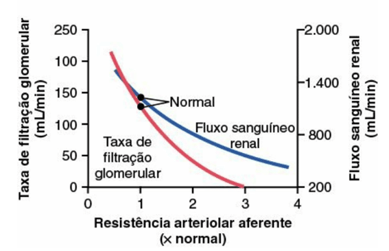
Por outro lado, aumentar a resistência da arteríola eferente possui uma resposta mais complexa.
Como visto em imagem anterior, a resistência nessa arteríola deixaria o sangue mais “represado” no glomérulo, aumentando pressão hidrostática glomerular, e assim a filtração ocorrerá mais intensamente.
Mas isso depende do grau e tempo de constrição dessa arteríola.
Se a resistência for muito acima do normal, o aumento na TFG ocorrerá somente num primeiro momento.
Repare que o gráfico abaixo é bifásico, e que a TFG vai diminuindo conforme arteríola eferente vai contraindo mais, e o fluxo sanguíneo renal vai diminuindo.
A explicação dessa resposta bifásica é aquela já discutida: o aumento da TFG num primeiro momento leva à elevação da concentração de proteínas plasmáticas nos glomérulos e, consequentemente, elevação da pressão coloidosmótica no plasma.
Isso tenderá a diminuir a TFG.
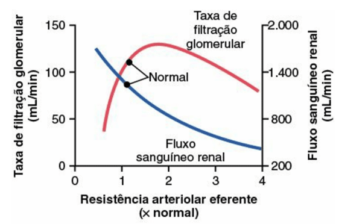
Pressão hidrostática capsular
Essa é a pressão hidrostática exercida pelo fluído dentro da cápsula de Bowman.
Ela é uma pressão contrária à FG.
Assim, se por alguma razão o volume do fluído dentro do nefron aumenta, essa pressão aumentará, e a FG diminuirá.
Autorregulação da FG
A principal função da autorregulação nos rins é manter a FG relativamente constante, e permitir o controle fino da excreçãorenal de água e solutos.
Observe na imagem abaixo que essa taxa se mantem constante, mesmo com oscilação da pressão arterial média:
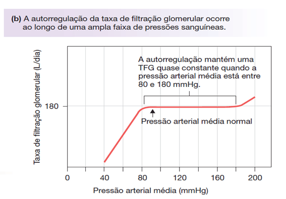
Mas como nosso corpo atua para manter a TFG constante?
Seguem a abaixo alguns dos mecanismos já conhecidos:
Feedback tubuloglomerular
Esse é um dos mecanismos de autorregularão da TFG.
É nesse mecanismo que fica claro a importância da mácula densa, do aparelho justaglomerular.
Relembre esse aparelho na figura abaixo:
Corpúsculo renal e aparelho justaglomerular
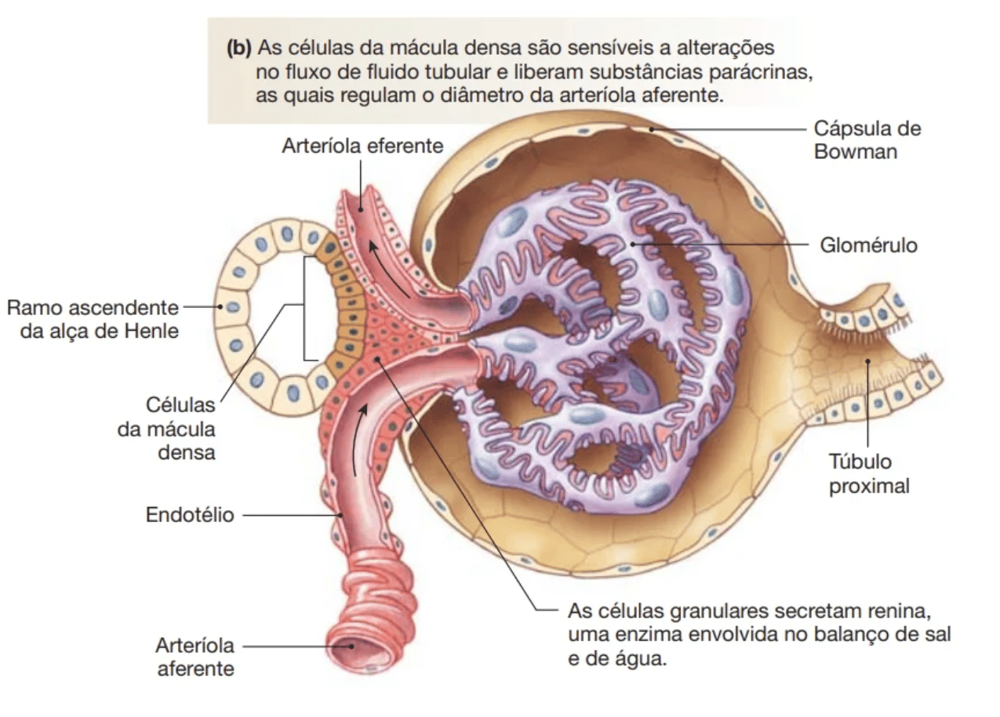
SILVERTHORN: Fisiologia humana, uma abordagem integrada. 7. ed. – Porto Alegre : Artmed, 2017.
As células da mácula densa detectam a quantidade de sódio que está no fluído passando por elas, bem como o volume de fluído, dentro do início do túbulo contorcido distal.
Com base nessa quantidade, essas células emitem sinais para as arteríolas aferente e eferente, regulando assim a TFG.
Veja na imagem abaixo como acontece esse feedback do túbulo distal com os componentes próximos ao glomérulo (feedback tubuloglomerular):
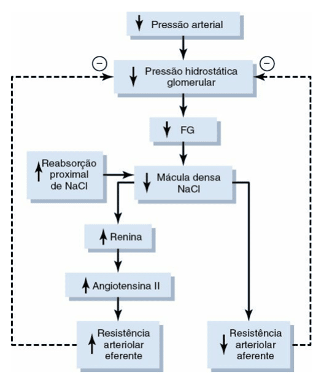
A imagem abaixo, agora da Silverthorn, mostra o mesmo mecanismo, agora partindo de um aumento na TFG.
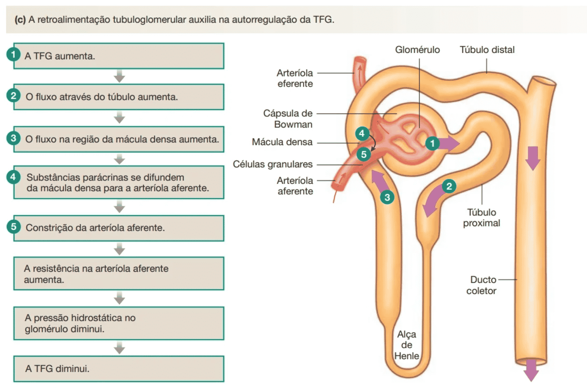
SILVERTHORN: Fisiologia humana, uma abordagem integrada. 7. ed. – Porto Alegre : Artmed, 2017.
Mecanismo miogênico
Esse mecanismo é muito simples.
Acontece que, caso ocorra um aumento de pressão arterial sistêmica, um maior volume de sangue chegará aos rins.
Quando esse volume aumentado chegar nas arteríolas aferentes, elas vão se distender.
Em resposta a essa distensão, elas contraem.
Essa contração acaba limitando o volume de sangue que chega nos glomérulos.
Isso é importante não só para manter a TFG, mas também para proteger os capilares glomerulares de possíveis lesões devido aumento de pressão.
Ambos os mecanismos (feedback tubuloglomerular e mecanismo miogênico) são respostas intrínsecas que garantem uma regulação fina da TFG, para que ela se mantenha constante.